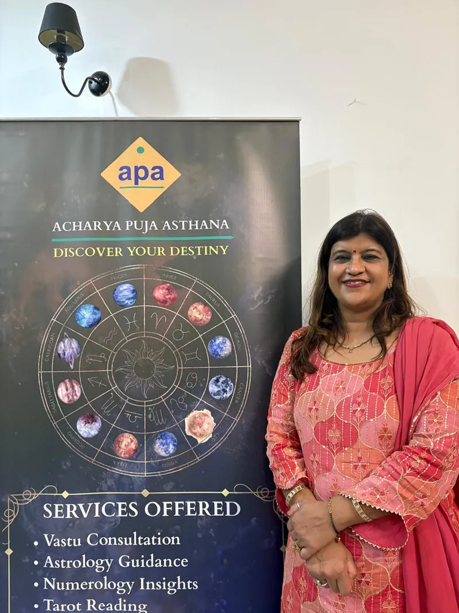
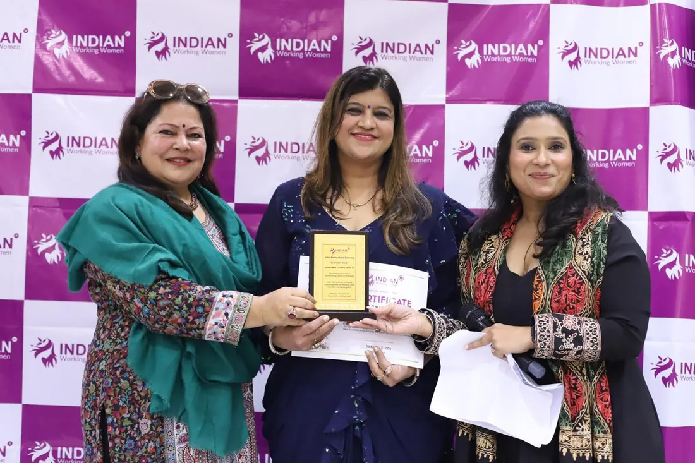
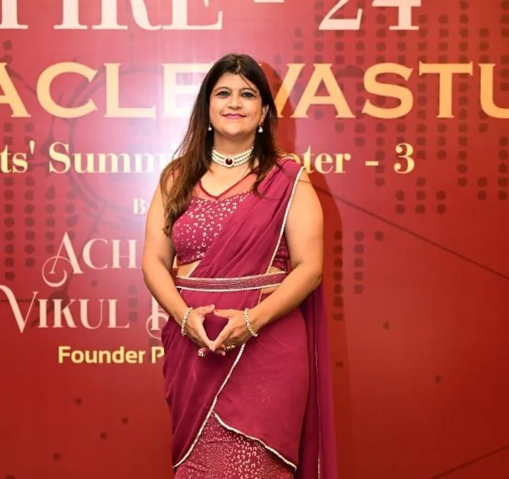

Vedic & KP Astrology
Birth-chart analysis for career, marriage, finance and life timing — with clear, practical remedies.
- Kundli & dasha reading
- Marriage & compatibility
- Prashna for urgent questions
Acharya Puja Asthana blends Vedic astrology, KP astrology, Vastu Shastra and energy analysis to bring clarity to your career, relationships, home and business — in person in South Delhi or online, anywhere in the world.
Choose the lens that fits your question — or let Acharya ji combine them for a complete picture.
Birth-chart analysis for career, marriage, finance and life timing — with clear, practical remedies.
Residential and commercial Vastu — homes, offices, showrooms and factories — without unnecessary demolition.
Align your name, numbers and important dates with your date of birth.
Read and balance the energy of people and spaces using aura scanning analysis.
ExploreIntuitive readings that complement your chart when you need direction on a specific situation.
Structured, practical courses in Vedic astrology, KP astrology and Vastu Shastra.
ExploreFounder of Spirit Stars, a certified Jyotish Acharya (Bharatiya Vidya Bhavan), Vastu & Astro-Vastu consultant and Aura Scanning Analyst.
At Spirit Stars she integrates Vedic astrology, KP astrology, Vastu Shastra and energy analysis to help you understand your life path, strengths and challenges — and to guide you toward balance, clarity and purpose. She also trains students in Vedic astrology, KP astrology and Vastu.
Most people come to Spirit Stars with one pressing question. Here are the most common ones.
Effort is high but growth is slow. A dasha and transit reading shows which period you are in and what to focus on.
Kundli matching and a relationship reading bring clarity before you commit — or while you work through challenges.
Vastu analysis of the floor plan before you move in — or practical corrections for a space you already occupy.
Muhurat for a launch, griha pravesh, purchase or ceremony — chosen from your chart and the panchang.
Numerology checks your name, mobile, vehicle and house numbers against your date of birth.
No hidden charges. Every consultation includes time for your questions and practical remedies.
Gemstone & rudraksha recommendations are complimentary.
WhatsApp or call with your question and the service you need.
Birth date, time and place for astrology; floor plan or site address for Vastu.
In person in South Delhi, at your site, or online on Zoom — with time for every question.
Practical, do-able remedies — and guidance as you put them into practice.



Spirit Stars is led by Acharya Puja Asthana, a certified Jyotish Acharya from Bharatiya Vidya Bhavan who practises both Vedic (Parashari) and KP astrology, along with Prashna Shastra. Consultations are available in person in South Delhi and online on Zoom.
An astrology consultation is ₹2,300. Vastu starts at ₹5,000 for an online Zoom consultation, and numerology services start at ₹905. The full price list is on this page; gemstone and rudraksha recommendations are complimentary.
Yes. Astrology, numerology and Vastu map analysis can all be done online on Zoom, so clients anywhere in India or abroad can book. On-site Vastu visits are available for homes, offices, showrooms and factories.
Your exact date of birth, time of birth and place of birth. If you are unsure of your birth time, mention it — Prashna (horary) astrology can answer a specific question using the moment it is asked.
In most cases, yes. Acharya Puja Asthana focuses on practical remedies — placement, colours, elements and directional balancing — before any structural change is considered.
Yes. Spirit Stars runs structured, practical training in Vedic astrology, KP astrology and Vastu Shastra. Message on WhatsApp for the next batch dates.
Share a few details and Acharya Puja Asthana's team will reply on WhatsApp to fix a time — in person in South Delhi or online on Zoom, anywhere in India or abroad.